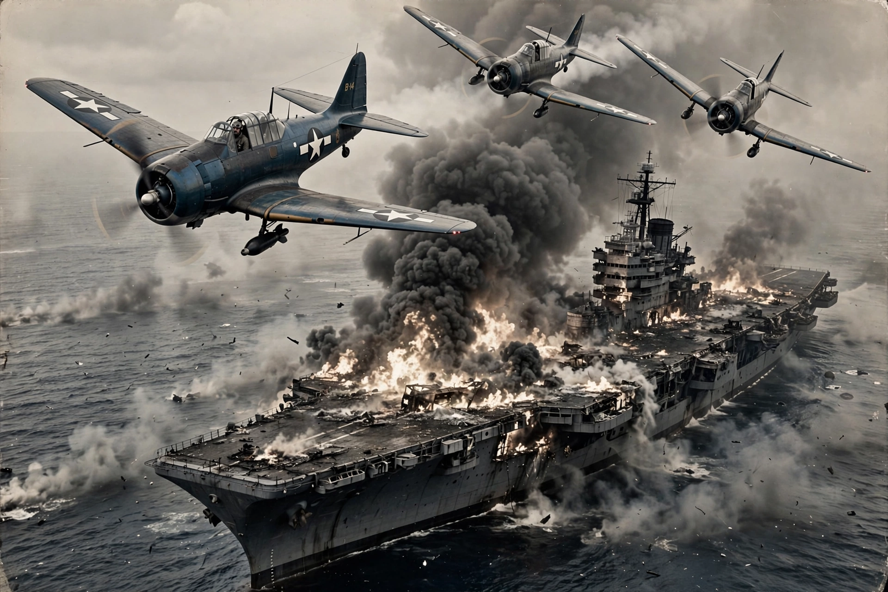

| Date | 4–7 June 1942 |
|---|---|
| Location | Midway Atoll, central Pacific |
| Belligerents | United States vs Empire of Japan |
| US losses | 1 carrier (Yorktown), 1 destroyer, c. 150 aircraft, 362 killed |
| Japanese losses | 4 fleet carriers, 1 heavy cruiser, c. 248 aircraft, 3,057 killed |
| Result | Decisive American victory; turning point of the Pacific War |
The Battle of Midway was a decisive naval battle in the Pacific theatre of the Second World War, fought on 4–7 June 1942, six months after the attack on Pearl Harbor. The Imperial Japanese Navy, seeking to eliminate the United States as a Pacific power and capture Midway Atoll as an advance base, committed four of its fleet carriers. American codebreakers had partially broken the Japanese naval code (JN-25) and revealed the plan, allowing Admiral Chester Nimitz to ambush the Japanese force. In a few hours on 4 June, American carrier aircraft sank all four Japanese carriers — Akagi, Kaga, Sōryū and Hiryū — a loss Japan's industry and pilot-training system could never replace.
Admiral Isoroku Yamamoto planned to lure the remaining American carriers into a trap by attacking Midway, while diversionary forces struck the Aleutians. US cryptanalysts at Station HYPO under Joseph Rochefort identified "AF" — the target — as Midway, famously confirmed when the atoll broadcast an unencrypted report of a water-desalination failure and Japanese traffic revealed "AF" was short of fresh water. Nimitz deployed Task Forces 16 (Enterprise, Hornet) and 17 (Yorktown, hastily repaired after the Coral Sea) north-east of Midway.
On the morning of 4 June, Japanese aircraft bombed Midway while Nagumo's carriers came under repeated attack from Midway-based and carrier aircraft. American torpedo squadrons were annihilated without scoring hits, but they drew Japanese fighter cover down to low altitude; at about 10:22, dive bombers from Enterprise and Yorktown arrived overhead almost unopposed and fatally damaged three carriers within minutes. The fourth, Hiryū, launched counterstrikes that crippled Yorktown before being sunk the same evening. Yorktown was torpedoed by a Japanese submarine on 6 June and sank the following day.
Midway ended Japan's capacity for large-scale carrier offensives and shifted the strategic initiative in the Pacific to the United States, which soon landed on Guadalcanal. Together with El Alamein and Stalingrad, it is counted among the great turning points of the war.
This article is a recreation from memory for the muse-webcrawl project.